Welcome!
I'm Ethan Medeiros
GitHub Google Play Itch.io SideQuestI'm a student and software developer. This simple website was created to host progressive web apps, and to give a quick overview of some of the things I've worked on.
Meta Quest Utilities
Meta's Quest devices run a customized and locked down version of Android. These tools aim to unlock additional functionality, allowing users the freedom to use the full potential of their headset.Lightning Launcher
GitHub SideQuest Itch.ioMost popular third-party app launcher for Meta Quest. Also supports Android TV devices.
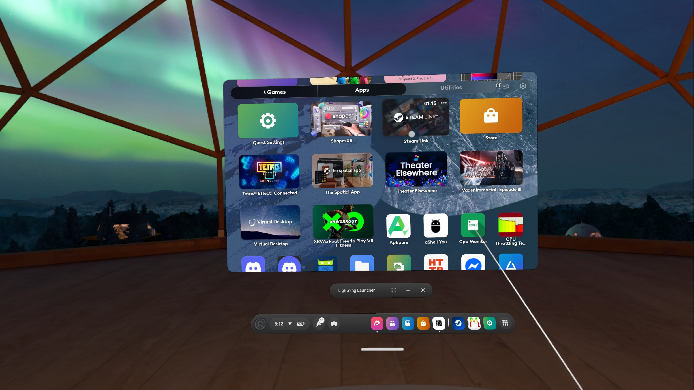 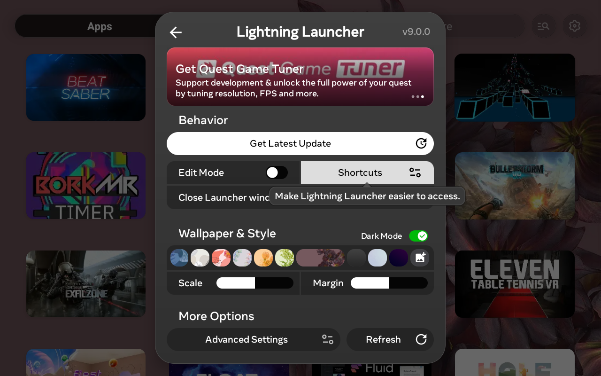
Quest Game Tuner
SideQuest Itch.io InstallerA paid app that allows users to customize graphics settings for individual games - including resolution, frame rate, and performance modes.
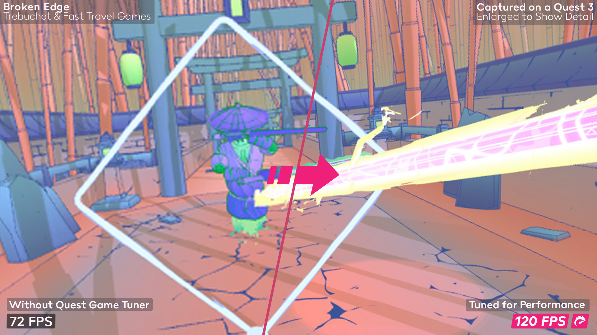 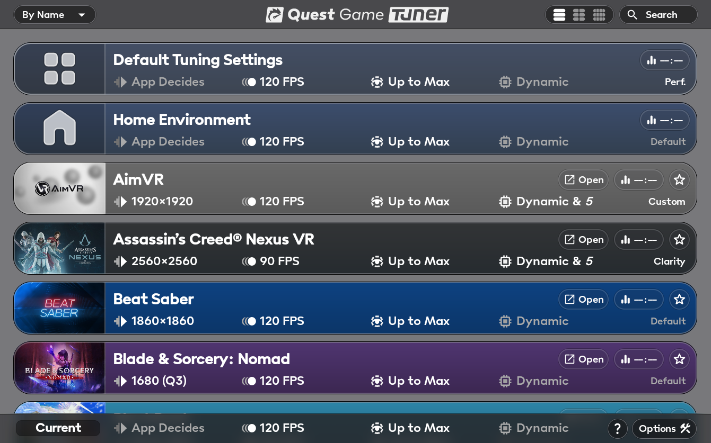
Game Development
I develop games in my free time, and have a few currently released on Google Play. Currently, all are written in customized versions of the Godot engine, and utilize native java code and libraries via plugins.All games are available as Progressive Web Apps for iOS, Mac, and PC. Installation Instructions
Chesscourt Quest
Google Play Itch.io Web AppRethink what it means to play chess in this unique puzzler, full of brain-teasers and surprises!
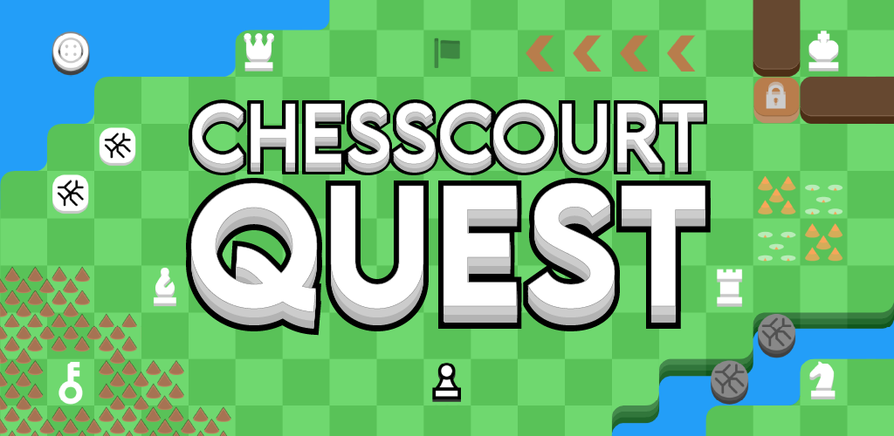 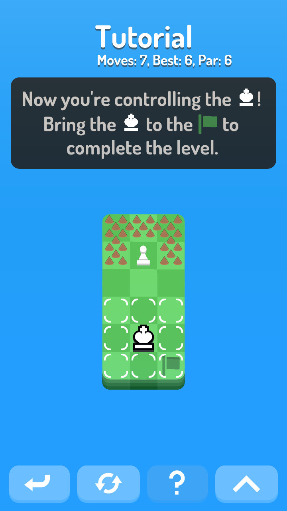 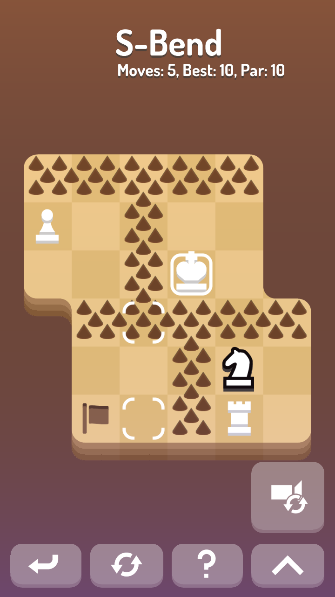 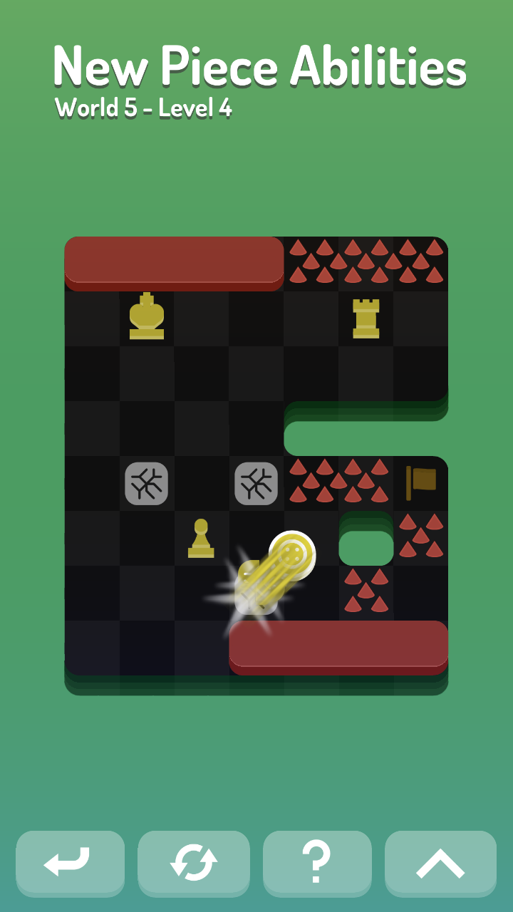
Stack Fit
Google Play Itch.io Web App Source CodeAn addicting puzzler-runner about fitting shapes into holes
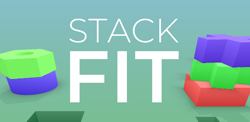 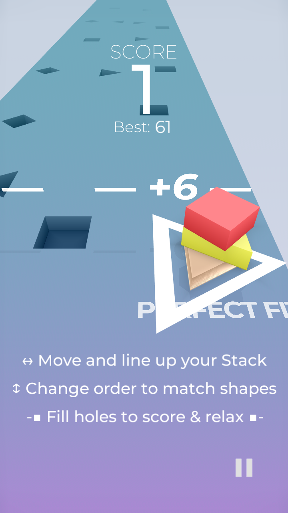 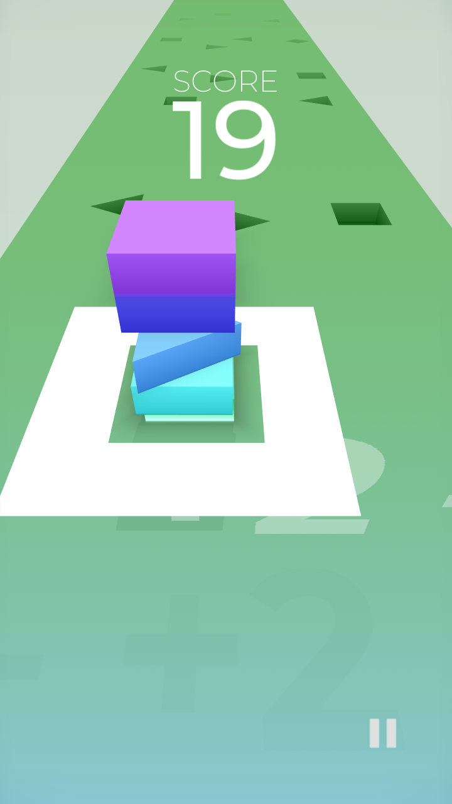 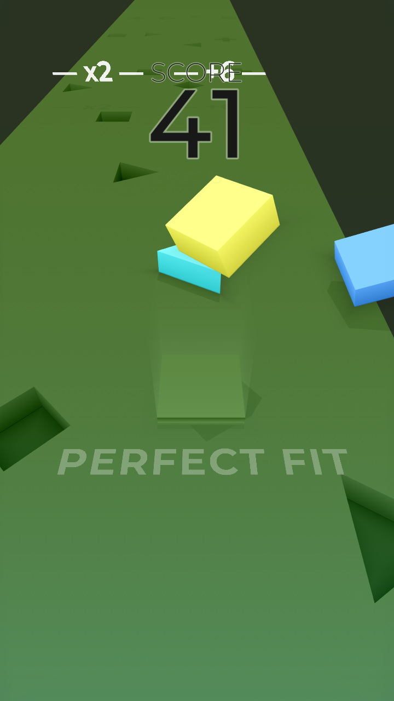
Slippy Jump
Google Play Itch.io Web AppA one-button jumping game with collectables and ice physics
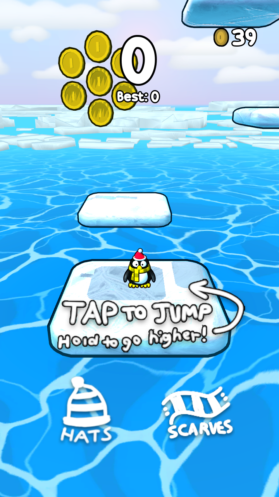 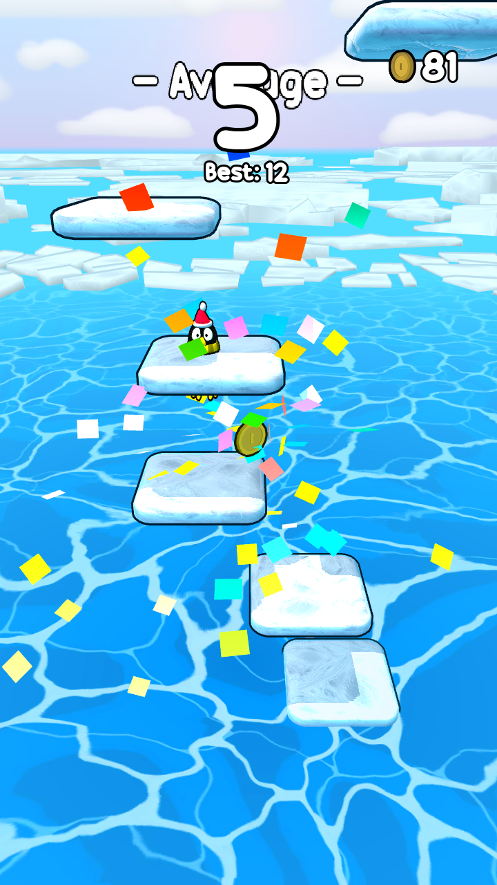 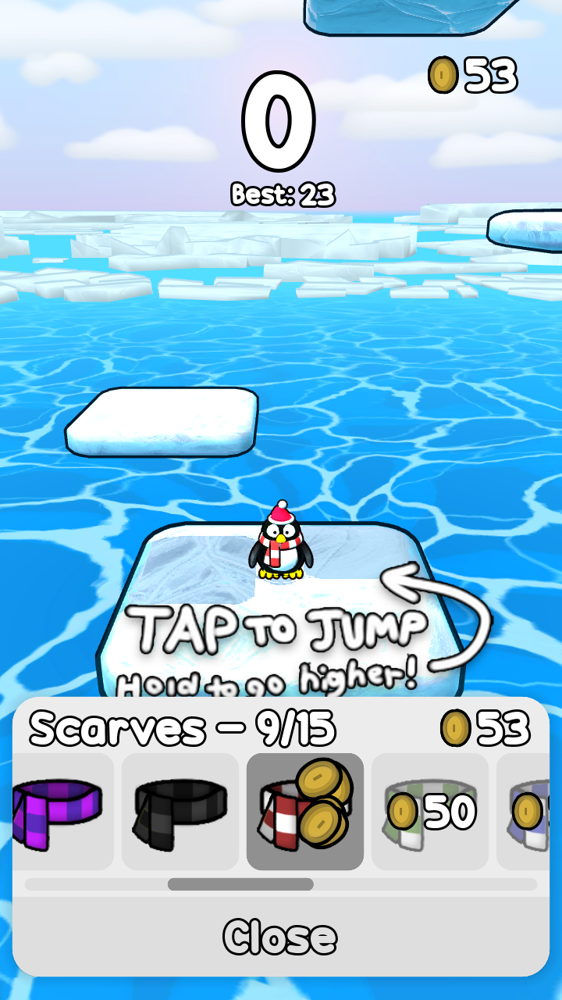
Game Modification
I enjoy modifying and reverse engineering video games, and have publically released a few mods and modding tools.XCX:DE Cut Content Restoration Mod
An expanded version of the original mod which restores even more cut content to the Nintendo Switch "Definitive Edition" of Xenoblade Chronicles X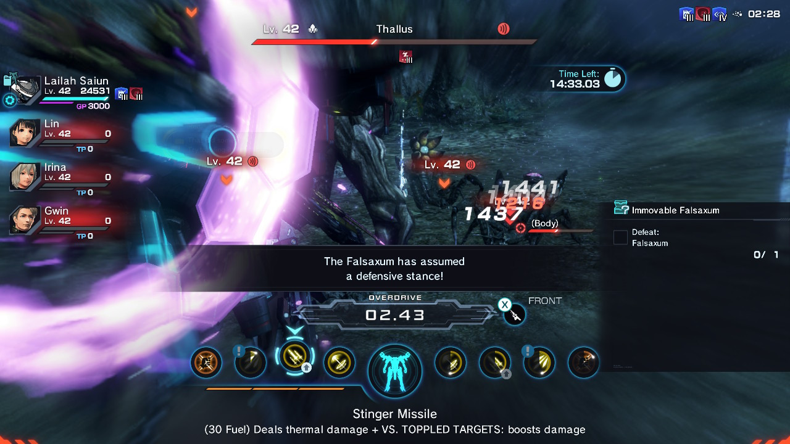 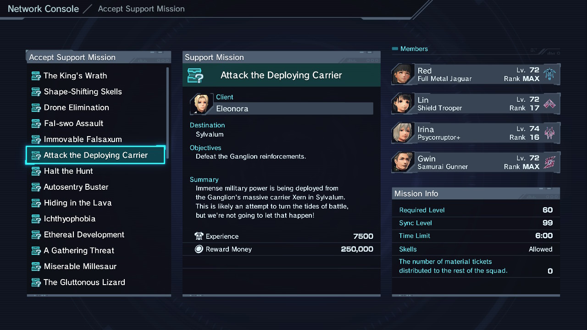
XCX Content Restoration Mod
Restores a number of cut items, weapons, mechs, missions, and abilities in the Wii U game Xenoblade Chronicles X. Includes some original localization work, compatible with console or emulator.Made using my Xenoblade BDAT Editor
Sonic Colors DX
An unofficial remaster of the Wii game Sonic Colors, using a customized shader pipeline and a modified version of the Dolphin emulator.Custom CSS
I'm a stickler for inconsistent or busy UI, so I've made a few custom CSS themes for applications I commonly use.Material Flat for Obsidian
A custom theme for the extensible note taking app Obsidian that focuses on readability, usability, and customization. It supports desktop on mobile, with various UI and UX improvements for both platforms.Material Flat is available for download and install through Obsidian's theme browser.
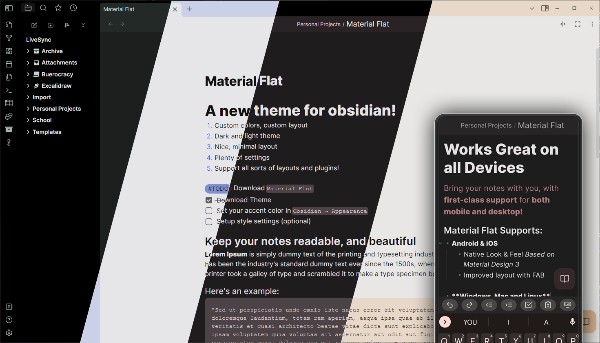